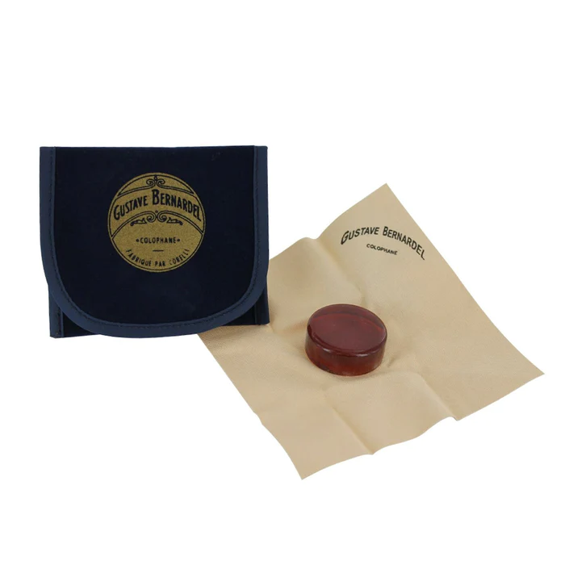
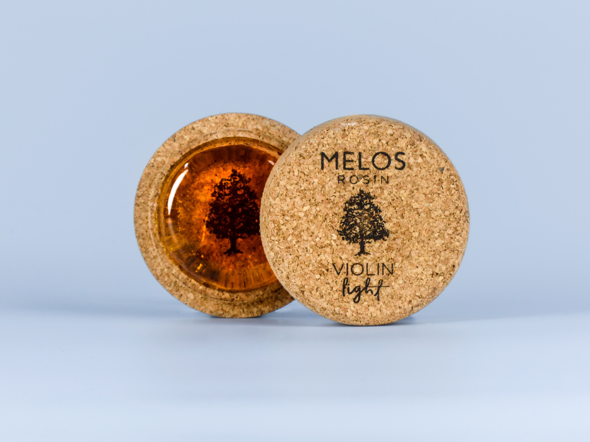
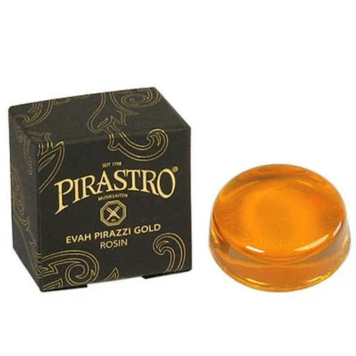

Tuners
Planet Waves PW-CT-12 Headstock Tuner MICRO (19$)

The D'Addario Micro Headstock Tuner is a feature-packed tuner your audience will never see. This highly accurate tuner features a full-color display with four selectable viewing angles (two vertical, two horizontal) in a housing that blends with the aesthetics of any instrument. The advanced tuning algorithms allow you to tune in noisy environments, while the ratchet clamp securely attaches to the instrument to hang tight during live performance. It’s so small, convenient, and accurate, you’ll want one for every instrument you own.
Snark Tuner (AIR-1) (27$)

The Snark Air is one value-packed little tuner! Of course, it tunes guitars and basses, but you can also use it with ukuleles, banjos, mandolins, and more. Courtesy of its bright, colorful LED display, you’ll always know when your pitch is flat (magenta), sharp (orange), or on target (green). Placing the Snark Air behind your headstock and double tapping the airplane logo reorients the display, letting you discretely tune during gigs. You’ll never need to replace batteries either, thanks to the Snark Air’s micro-USB charging capabilities. Sweetwater guitarists are impressed by the Snark Air's many features, especially considering that its price is "airy" on your wallet.
PRS Rechargeable Clip-On Headstock Tuner (29$)

PRS Guitars’ Rechargeable Clip-On Tuner is easy to use, stunningly accurate, and wholly reliable. A single charge on this tuner will last weeks, and, with the provided USB cable, recharging is simple without the need for batteries. The no-slip clip anchors a 360° rotating arm for guaranteed readability. And, best of all, the PRS Rechargeable Clip-On Tuner proudly stands with the most accurate tuners in the market with .5cent accuracy in strobe mode.
Amps
afsaf (149$)

Cases & Bags
afsaf (149$)
Metronomes
afsaf (149$)
Rosins
Bernardel Rosin (9.99$)

Gustave Bernardel rosin is an excellent advanced rosin, suitable for violin, viola & cello. Gustave Bernardel (1832-1904) was a French violin maker who developed his own formula for rosin. This rosin is still being produced to the original specifications – it is handmade from the ‘galipot’ (first sap of the tree) of high quality selected pine trees. It is great for advanced students to professional players. French-made Gustave Bernardel amber rosin creates a nice, smooth feel on the violin, viola and cello. It is a light coloured medium sticky rosin for smooth playing and a clean, bright tone.It comes in a round cake attached to a protective suedette cloth in a velvety material pouch.
MELOS ROSIN Violin Light (22$)

Melos Rosin Violin Light grips the strings softer than the rest of our violin products, offering silky and warm sound qualities, without any unexpected noises or dust, in all kinds of bowing techniques. This cake is designed to efficiently deliver high and medium wave frequencies and is specially produced to endure high temperatures, during spring or summer. Each and every rosin cake is made exclusively by hand. Minor deformities are corollaries of the natural origin of the ingredients used and the handmade process, without using any kind of machinery that could potentially lower our products’ quality.
Pirastro Evah Pirazzi Gold (25$)

Specifically developed to match perfectly with the seductive and inspiring sound of our Evah Prazzi Gold sets, the Evah Pirazzi Gold rosin brings forth the full sound spectrum, powerful projection, and excellent bow response of these strings. Evah Pirazzi Gold rosin increases the ease of bow response in the softer dynamic range and maximizes the instrument‘s ability to react to bow pulses during fast and virtuoso playing. The rosin‘s powerful contact with the strings allows the player to draw out the sound evenly and enable clear articulation without harshness. A smooth, supple, and satisfying playing experience is also provided as soon as the rosin is applied. The Evah Pirazzi Gold rosin distinguishes itself by creating only a minor formation of dust with no residue forming on the bow hair or the strings point of contact. We advise that you apply this rosin sparingly to achieve optimal results. You may find that you need to use much less than other types of rosin.
Bench & Stands
On-Stage KT7800+ (49$)

-
Adjustable heights: Approx. 49 / 54 / 58 / 62 cm
-
Material: Man made leather
-
With 7.5 cm padding
-
Max. Load weight: 150 kg
-
Weight: Approx. 7 kg
-
Colour: Black
Yamaha B1 Piano Bench (99$)

The B1-B bench is designed to match Yamaha's Arius YDP, Clavinova digital pianos and other Yamaha keyboards in Black finishes. Sturdy and comfortable, this item is delivered flat-packed and requires some basic assembly.
Strings
afsaf (149$)